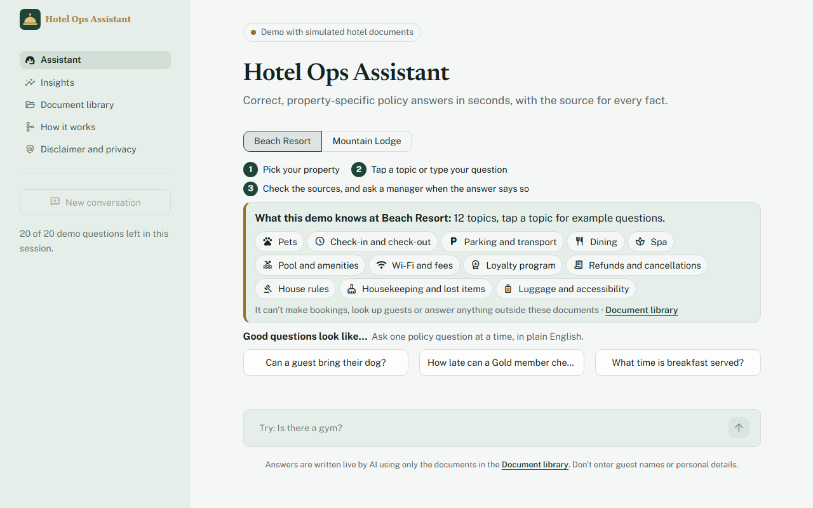
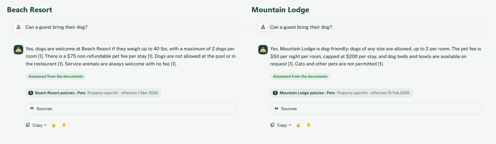
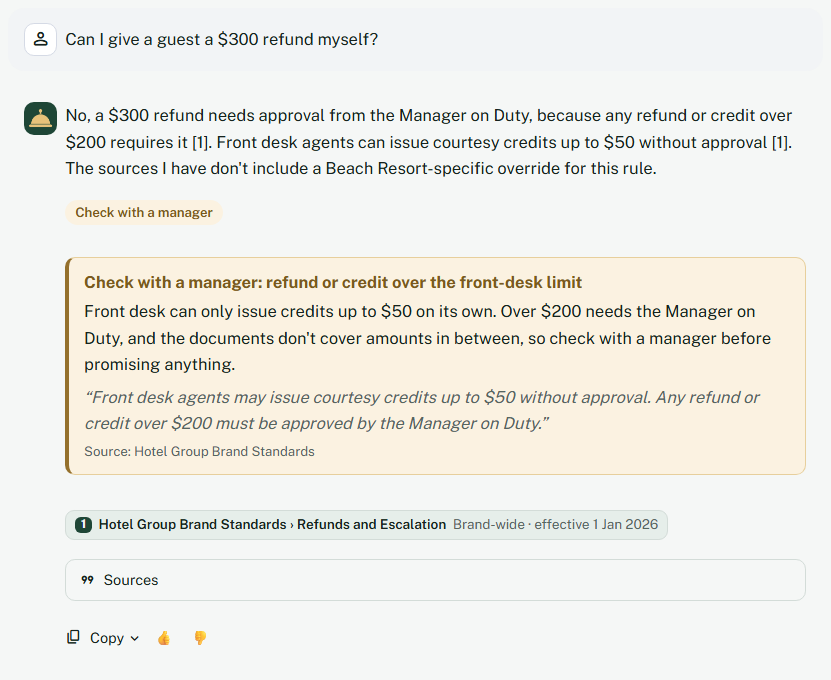
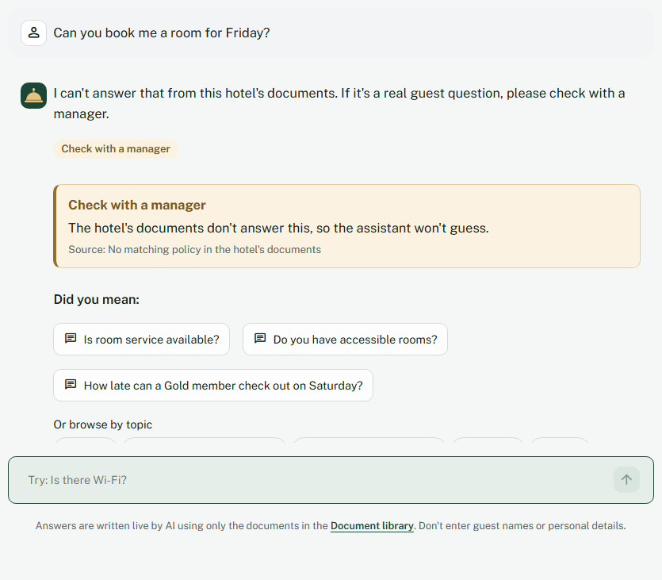

Projects › Hotel Operations Knowledge Assistant
Watch the 2-minute demo
Recorded on the live app with real answers: a cited answer in seconds at two hotels, a hotel rule overriding a loyalty perk, a manager escalation, a refusal with suggestions, and the guidance a first-time visitor sees.
Read the transcript
Hotel Operations Knowledge Assistant: a simulated client project.
A front-desk agent at Beach Resort asks if a guest can bring their dog. In seconds, a short answer appears, with the source for every fact.
At Mountain Lodge, the same question gets that hotel's own rules. It never mixes up properties, and related questions are one tap away.
Here, the loyalty program promises a two p.m. checkout, but this hotel caps weekends at noon. The assistant applies the hotel's rule and shows the exact text.
A refund over the front-desk limit gets a check-with-a-manager note, quoting the policy.
When the documents don't say, it refuses instead of guessing. A wrong safety answer is worse than none.
And instead of a dead end, it suggests close questions it can answer.
Every new conversation starts with guidance: how to use it, what this demo knows, and good questions to ask.
Topic chips show example questions for each area, like the spa.
Managers see what staff ask, how they ask, and which questions point to gaps in the policies.
Every answer comes only from these documents, all synthetic, for a simulated client.
It's measured on fifty-four test questions: ninety-eight percent answer accuracy on this live demo, at about seventeen cents per thousand questions.
Try the live app, or read the code and the decisions. The links are on screen.
Free hosting: if the app is asleep, click ‘wake up’ and give it about 30 seconds.
Hotel Operations Knowledge Assistant
Correct, property-specific policy answers for front-desk staff in seconds, with the source for every fact.
Independent project: a simulated client engagement for a fictional hotel group with a beach resort and a mountain lodge. The documents are synthetic, written to mirror real hotel operations. Quality, speed and cost are measured; the business figures are projections from stated assumptions.
The problem
A guest at the front desk asks, “Can I bring my dog?” At the beach resort the answer is yes, up to 40 lbs, $75 per stay. At the mountain lodge it's yes, any size, $50 per night, capped at $200. And an outdated 2024 document on the shared drive still says no pets at all.
Staff have to find the right document, for the right hotel, while the guest waits. Wrong answers end in refunds, complaints and calls to the manager.
The approach
- Property-aware answers: staff pick their hotel; search only sees that hotel's documents plus brand-wide rules.
- A source for every fact, streamed in about a second, with chips showing the document, section and effective date.
- Refusal instead of guessing, and off-topic questions refused before any model call.
- Corrections, not agreement: a wrong fee or time stated in the question is corrected from the documents.
- “Check with a manager” notes for refunds over the front-desk limit, safety and repeated complaints, quoting the rule word for word.
- Guidance for first-time users: How to use, a “What this demo knows” panel generated from the documents, topic chips, curated follow-ups and “Did you mean” after a refusal.





Architecture
- Staff UI (Streamlit): a question for one propertyGreetings and “what can you do?” are answered instantly, without the model.
- Scope checkDoes anything in this hotel's documents match the question?
- Refusal path: nothing matches → a polite scope message with “Did you mean” questions, no model call.
- Retrieval with the property filterOnly this hotel's documents plus brand-wide ones; keyword search (BM25), plus embeddings in hybrid mode; top 5 passages.
- Claude Haiku 5.5A short answer that cites each passage it uses, or the fixed refusal when the documents don't say.
- Refusal path: “I can't answer that from this hotel's documents”, with “Did you mean” and topic chips.
- Cited answerPlain code checks every number against the cited sources and adds “check with a manager” notes quoted from the rules.
| Problem in the data | How it's handled |
|---|---|
| Different rules at each hotel | Search is filtered to the selected property plus brand-wide documents |
| Outdated policy versions | Documents marked as superseded are never indexed |
| Price tables in menus | Chunking never splits a table |
| “Page 1 of 3” footers in PDFs | Repeated lines removed, ignoring changing page numbers |
| A scanned, image-only PDF | Detected and flagged for OCR; safety questions point to a manager |
| A pasted guest email telling the AI to waive fees | Treated as data, flagged in the document library, tested every run |
Results
54 labeled questions in 16 categories, including a prompt-injection attack, questions it must refuse, cross-property leaks, wrong facts in the question, off-topic questions and escalation rules. Each setup ran 3 times with Claude Haiku 5.5, measured on 2026-10-10.
| Measure | Live app (keyword-only) | Hybrid (local, Docker) |
|---|---|---|
| Right passage retrieved (strict) | 98% (44/45) | 98% (44/45) |
| Answer accuracy | 98% | 97% (96–98%) |
| Citation accuracy (cites the right document) | 98% | 98% |
| Every number traceable to a source | 98% | 100% |
| Correct refusals | 27 of 27 | 27 of 27 |
| “Check with a manager” rules correct | 54 of 54 | 54 of 54 |
| First question a visitor types: useful result (49 questions) | 100% (was 43%) | 100% (was 49%) |
| Full answer, 95th percentile | 2.49 s | 2.71 s |
| Cost per 1,000 questions | $0.17 | $0.19 |
Testing it like a first-time visitor changed the product. The 54-question eval was written against the documents, so it scored 96–98% while the questions a visitor actually types first (Wi-Fi, the gym, breakfast, “checkout”) were often refused or blocked. I measured 49 such questions first: 43% got a useful result. Filling real content gaps, spelling “check-out” and “checkout” the same way, curated suggestions and friendly handling of greetings and off-topic input took it to 100%, with no regression on the original eval. I wrote those questions myself, so held-out questions from other people come next.
My grader passed a wrong answer. “Can a 16-year-old book a facial?” only had to mention “18”, so “Yes, a 16-year-old can book a facial. The spa requires guests to be 18 or older” counted as correct. I fixed the measurement before touching the model.
Trade-offs
| Choice | Why | What it costs |
|---|---|---|
| Keyword-only search on the free hosting tier | The embedding model needs about 600 MB of memory; keyword search fits and scores 98% strict retrieval | Meaning-only questions (“a guest left a jacket”, the Spanish question) need hybrid search, which runs in Docker |
| Claude Haiku 5.5 over Haiku 4.5 | Within run-to-run range on quality (97% vs 98% hybrid) at $0.19 vs $0.99 per 1,000 questions | About a second slower at the 95th percentile, still under the 3-second target |
| Curated suggestions, not generated ones | Every suggestion is tested to retrieve its topic and get a real answer, and costs no model call | A list to maintain; less tailored than generated text |
| Refuse rather than guess | A wrong policy answer turns into a refund or a safety risk | Some answerable questions are refused; “Did you mean” and topic chips soften it |
| Deterministic checks before an LLM judge | Cheap, repeatable and unit-tested: facts, citations, numbers, refusals | Word lists have false positives; a judge calibrated on human labels is stage 3 |
Engineering
- Tests: 307 tests at 97% coverage, including every page rendered in a test harness and an injected error on each page.
- CI on every commit: lint and format checks, a dependency audit, a coverage gate, a retrieval regression gate, a first-question gate on the 49 visitor questions, and a check that every curated suggestion works.
- Eval method: strict passage-level retrieval, required and forbidden facts per answer, citation and numeric grounding checks, 3 runs per setup, and every raw answer saved. Eval code and reports →
- Security: secrets kept out of the code with secret scanning and push protection, document text treated as data rather than instructions, output escaping, per-session and daily caps, CSV formula-injection protection, and a password-gated admin page. Threat model →
- Decisions: every choice with its context, trade-off and result. Decision log →
Business case (a projection)
Projected from stated assumptions and shown as a range, because the inputs are uncertain. Nothing here is a measured saving. The base case assumes 40 policy lookups a day per property, 2.5 minutes saved each, $20 an hour staff cost and one wrong answer a week costing a $75 refund. Only the AI cost per question is measured.
| Projected net value per year | 2 properties | 100 properties |
|---|---|---|
| Pessimistic | $8,524 | $423,187 |
| Base | $31,887 | $1,591,375 |
| Optimistic | $66,451 | $3,319,562 |
The result depends most on minutes saved per lookup, so that's the first thing a pilot should measure. Full business case and pilot plan →
What's next
- Held-out visitor questions from people who haven't seen the documents
- A multilingual embedding model (the Spanish test question still fails) and OCR for scanned documents
- Stage 2: an agent that drafts replies to guest emails, using this assistant as a tool
- Stage 3: an LLM judge calibrated against human labels, with 100+ test questions
- Stage 4: sign-in with roles, personal-data redaction and monitoring